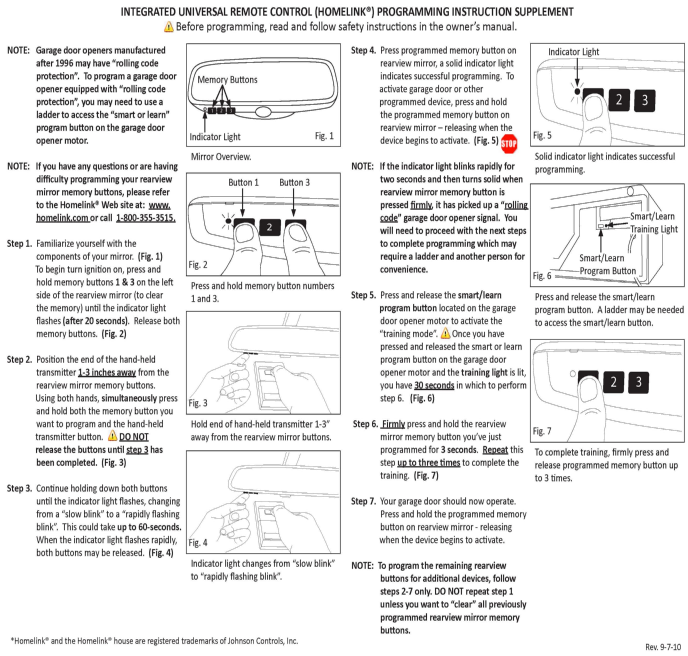

Accessories - Integrated Univ. Remote Control Diag. Tips
SI B66 10 10Distance Systems, Cruise Control, Remote Control
October 2010
Technical Service
SUBJECT
Diagnosis Tips - Integrated Universal Remote Control (UGDO)
MODEL
All with option code 319 (Universal garage door opener)
SITUATION
The Integrated Universal Remote Control (UGDO) is located in the interior mirror and is typically used for controlling garage door openers.
Most interior mirrors replaced for UGDO complaints are without fault when tested. This Service Information provides diagnostic tips in order to avoid unnecessary mirror replacement.
INFORMATION
Information on the HomeLink(R) UGDO can be found at www.homelink.com/home.php. Direct the customer to this excellent resource if diagnosis at the dealership indicates that the UGDO is working correctly and the customer needs additional programming assistance. Additional UGDO information can be found in the vehicle Owner's Manual.
Programming problems:
Request that the customer bring in the hand-held remote control transmitter (remote) that is causing difficulty, together with any other remotes that the customer uses. If necessary, the UGDO can be reprogrammed using these remotes. For rolling code devices, the customer will need to train the UGDO upon returning home (see item 5 below).
NOTE:
If the customer has a regular full-size remote as well as a smaller (key ring) remote, only the full-size remote should be used for the programming procedure.
With the vehicle ignition turned to the "on" position, check the status of the UGDO by pressing each of the programming buttons. Note that the UGDO is "off" if the vehicle ignition is "off".
1. Each button should illuminate the LED in some way (steady on or flashing). This indicates a fully functional UGDO.
^ If no LED illuminates, possible causes are:
^ Ignition not switched on
^ No power or ground
^ Faulty mirror
^ If one button illuminates the LED, but any one or two buttons do not, the mirror is faulty.
2. If any button illuminates with a slow flashing LED, the memory is empty; the button has not been programmed.
^ Check the batteries in the customer remote control and replace if necessary.
^ Refer to the attachment from step 2 to program the UGDO.
3. If every button illuminates with a steady "on" LED, most likely the customer has not cleared the factory setting. Attentively, the customer has programmed each button with a fixed code. (Check with the customer.)
^ Refer to the attachment from step 1 to delete the stored memories and program the UGDO.
4. If any button illuminates with a steady "on" LED, the button has been programmed with a fixed code.
^ Check that the correct remote is being used.
^ The garage door may have a range problem.
5. If any button illuminates with a rapid flashing LED, followed after 2 seconds by a steady "on" LED, the button has been programmed with a rolling code. However, the training mode for the rolling code may not have been successfully completed.
^ Provide the attachment to the customer and refer the customer to steps 5 - 7. Direct the customer to the instructional videos on the HomeLink(R) website, www.homelink.com/program.php..
Range problems:
1. Advise the customer that the UGDO range is less than the original hand-held remote's range. A range of less than 50% of the original remote's range should be investigated as a vehicle/interior mirror problem.
2. If the UGDO and the original remote both have reduced range, the UGDO is not at fault. The customer should check the garage door opener; possibly, the antenna wire is not properly extended.
WARRANTY Information
For information only
ATTACHMENTS

view PDF attachment B661010 Attachment.